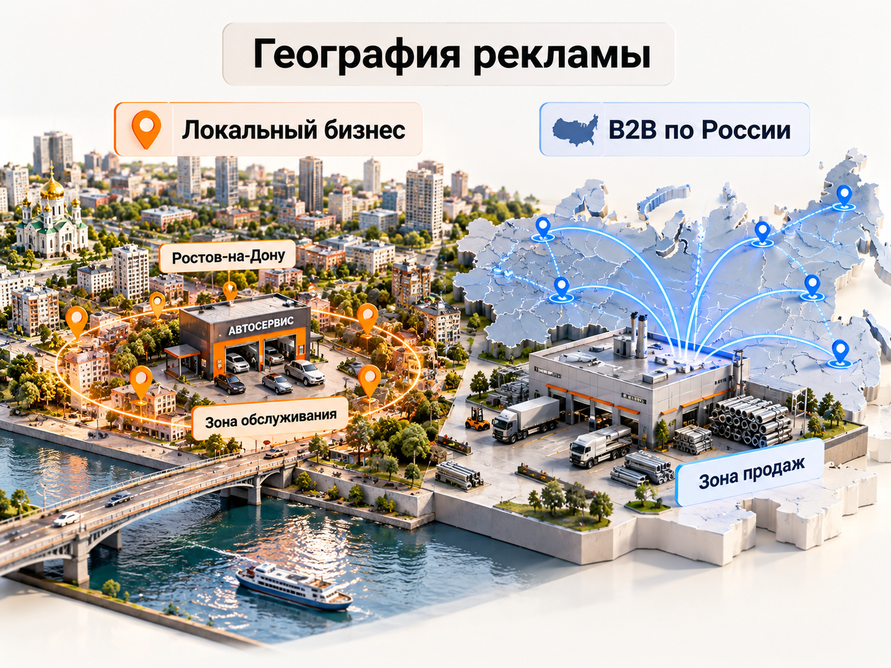

Блог о платном трафике
Интернет-маркетолог в Ростове-на-Дону - Максим Мирошников
Меня зовут Максим Мирошников. Я интернет-маркетолог, работаю с компаниями Ростова-на-Дону и других регионов России. Моя специализация - привлечение клиентов через платную рекламу: Яндекс Директ, Telegram Ads и Avito Ads. Кроме рекламы, занимаюсь аналитикой, проверяю сайты и рекламные предложения, помогаю находить причины низкого качества заявок.
В интернет-рекламе я с 2014 года. За это время работал более чем со 140 проектами в B2B и B2C. На сайте опубликовано более 40 кейсов с результатами рекламных кампаний.
Стоимость регулярного ведения рекламы - от 30 000 ₽ в месяц. Рекламный бюджет оплачивается отдельно. Работаю лично, без агентства, менеджеров и учеников. Сотрудничество оформляется по договору с ИП, предусмотрен электронный документооборот.
Моя задача - не просто настроить рекламный кабинет. Важно понять, какие обращения получает бизнес, сколько они стоят и что мешает превращать их в продажи.
Какие задачи решает интернет-маркетолог
Интернет-маркетолог помогает бизнесу находить клиентов через цифровые каналы и оценивать результат продвижения. Но специализации у маркетологов разные: кто-то занимается SEO, кто-то контентом, кто-то рекламой и аналитикой.
Я специализируюсь на performance-маркетинге. Это работа с измеримыми результатами: заявками, квалифицированными обращениями, продажами и расходами на привлечение клиентов.
Чаще всего ко мне обращаются со следующими задачами:
| Задача бизнеса | Что я делаю |
|---|---|
| Нужно запустить рекламу с нуля | Анализирую спрос, выбираю рекламный канал, готовлю и запускаю кампании |
| Реклама расходует бюджет, но заявок мало | Проверяю запросы, аудитории, настройки, цели и посадочные страницы |
| Заявки есть, но продаж недостаточно | Анализирую качество обращений и доступные данные CRM |
| Нужно снизить стоимость лида | Ищу неэффективные сегменты, перераспределяю бюджет, тестирую гипотезы |
| Нужно продвигаться в конкретном городе | Учитываю географию спроса, местную конкуренцию и реальные границы обслуживания |
При этом не каждую проблему можно решить настройками рекламы. Иногда главная причина находится на сайте, в предложении или обработке заявок.
Поэтому я оцениваю всю систему привлечения клиентов, а не отдельные показатели рекламного кабинета.
Мои услуги: Яндекс Директ, Telegram Ads и Avito Ads
Основные рекламные инструменты, с которыми я работаю, - Яндекс Директ, Telegram Ads и Avito Ads. Выбор зависит от продукта, целевой аудитории и задачи бизнеса.
Не считаю правильным одновременно запускать рекламу во всех доступных системах. Сначала нужно определить, где находится наиболее подходящий спрос и какой канал имеет смысл тестировать.
Настройка и ведение Яндекс Директа
Яндекс Директ - мой основной рабочий инструмент.
Занимаюсь запуском новых кампаний, аудитом и оптимизацией уже работающей рекламы. Использую поиск, РСЯ, ЕПК, Мастер кампаний, ретаргетинг и другие подходящие форматы.
В зависимости от проекта работа включает:
- Анализ продукта, конкурентов и поискового спроса.
- Сбор и группировку ключевых фраз.
- Подготовку объявлений и рекламных креативов.
- Настройку кампаний и стратегий.
- Подключение Яндекс Метрики и целей.
- Проверку поисковых запросов, аудиторий и площадок.
- Анализ стоимости и качества обращений.
- Оптимизацию бюджета и масштабирование эффективных направлений.
Если реклама уже запущена, не предлагаю автоматически пересобирать весь аккаунт. Сначала нужно определить, что действительно мешает получать результат.
Подробнее: настройка Яндекс Директа и ведение Яндекс Директа.
Реклама в Telegram Ads
Telegram Ads использую для продвижения каналов, ботов и продуктов, аудитория которых находится внутри Telegram.
Здесь особенно важно различать промежуточные и конечные результаты.
Например, недорогой подписчик не обязательно становится покупателем. Аналогично запуск Telegram-бота ещё не означает оплату продукта.
Поэтому, когда проект позволяет, я отслеживаю не только стоимость подписки или запуска бота, но и дальнейшие действия пользователей.
В одном из проектов VPN-сервиса реклама привела 3570 запусков Telegram-бота по 0,29 евро. Для оценки эффективности использовался отдельный учёт результатов рекламных площадок.
Avito Ads
Avito Ads рассматриваю как самостоятельный рекламный канал для товаров и услуг, которые аудитория ищет через Авито.
Перед запуском оцениваю, насколько площадка соответствует продукту, какие обращения необходимы бизнесу и как будет измеряться эффективность.
Для одного проекта достаточно Яндекс Директа. В другом случае полезно тестировать Директ и Авито. Выбор должен зависеть от реальной задачи, а не от желания присутствовать везде.
Сайты, аналитика и рекламные воронки
Даже хорошо настроенная реклама может работать слабо, если посадочная страница не объясняет предложение или затрудняет обращение.
Поэтому я проверяю:
- Соответствие страницы поисковому запросу или рекламному объявлению.
- Понятность предложения на первом экране.
- Удобство сайта на мобильных устройствах.
- Работу форм, кнопок и способов связи.
- Корректность целей Яндекс Метрики.
- Качество обращений и данные по продажам.
При необходимости помогаю с созданием или доработкой посадочных страниц и рекламных воронок.
Как я оцениваю эффективность интернет-рекламы
Эффективность рекламы для бизнеса определяется не только количеством кликов или заявок. Важно понимать, сколько обращений действительно соответствуют требованиям компании и превращаются в клиентов.
Для этого разделяю несколько уровней результата.
| Показатель | Что он показывает |
|---|---|
| CPC | Стоимость перехода из рекламы |
| CPL | Стоимость полученной заявки |
| Квалифицированные лиды | Обращения, которые соответствуют требованиям бизнеса |
| CAC | Стоимость привлечения клиента |
| ДРР и ROAS | Соотношение расходов на рекламу и связанной с ней выручки |
Например, две кампании могут привести по 20 заявок с одинаковой стоимостью обращения.
Но если первая привела 15 потенциальных покупателей, а вторая только 5, эффективность этих кампаний для бизнеса будет разной.
Поэтому я стараюсь получать данные не только из рекламного кабинета и Метрики, но и из CRM, когда она используется.
Мой основной принцип: дешёвая заявка не обязательно выгодна бизнесу. Если люди не соответствуют целевой аудитории, снижение CPL само по себе не решает задачу.
Подробнее о том, как отделять реальные обращения от неподходящих: квалификация лидов в продажах.
Особенности рекламы бизнеса в Ростове-на-Дону
Для продвижения в Ростове-на-Дону важно учитывать не только расположение компании, но и реальную географию её клиентов.
У локального бизнеса и компании, продающей товары по всей России, рекламные задачи принципиально различаются.
| Параметр | Локальный бизнес | B2B с продажами по России |
|---|---|---|
| География | Город и фактическая зона обслуживания | Все регионы, в которых компания работает с клиентами |
| Типичный пример | Автосервис, клиника, доставка | Производитель или оптовый поставщик |
| Основная задача | Привлечь клиентов из доступной географии | Получать целевые запросы от подходящих компаний |
| Главный риск | Оплата обращений из неудобных районов и городов | Потеря спроса из-за слишком узкого геотаргетинга |

Например, если автосервис работает в Ростове-на-Дону, нет смысла оценивать рекламу только по количеству заявок из всей Ростовской области. Важно понимать, откуда человек реально готов приехать.
Для производителя оборудования, который находится в Ростове, ситуация противоположная. Если компания поставляет продукцию по всей стране, ограничение рекламы городом может лишить её значительной части потенциальных покупателей.
Поэтому сначала я определяю фактическую географию продаж, а уже затем выбираю настройки рекламы.
Для локальных услуг также важно учитывать мобильный трафик, звонки, Яндекс Карты и качество обработки обращений.
При этом я работаю удалённо. Для настройки рекламы, анализа статистики, работы с Метрикой и CRM постоянные встречи в офисе не нужны.
Опыт работы интернет-маркетологом в Ростове-на-Дону
Мой профессиональный опыт напрямую связан с компаниями Ростова-на-Дону.
2017‑2019 годы - «Интернет компания Юг».
Работал интернет-маркетологом, занимался Яндекс Директом, Google Ads, myTarget, подбором семантики, подготовкой объявлений, аналитикой и оптимизацией рекламных кампаний.
2019‑2020 годы - ГК «ЕВРОПОЛИМЕР».
Работал интернет-маркетологом на производственном предприятии. В мои обязанности входили разработка стратегии интернет-продвижения, реклама девяти корпоративных сайтов, внедрение аналитики, взаимодействие с отделом продаж и контроль подрядчиков по сайтам и SEO.
С 2020 года - самостоятельная работа с клиентами.
Веду рекламные проекты напрямую как индивидуальный предприниматель.
У меня высшее образование ДГТУ. В 2025 году получил сертификат специалиста по Яндекс Директу.
Опыт работы внутри производственной компании особенно полезен в B2B-проектах. Там недостаточно привести обращение: нужно учитывать качество потенциального клиента, длительность переговоров и работу отдела продаж.
С какими нишами я работал
За годы работы у меня были проекты в разных сегментах бизнеса:
- Производство и промышленное оборудование
- Недвижимость
- Медицина
- Юридические услуги
- Образование и онлайн-школы
- Интернет-магазины
- Автомобильные услуги
- Локальные сервисы
- Оптовые продажи
- Telegram-проекты и подписочные сервисы
Работал с рекламными бюджетами до 5,2 млн рублей в месяц.
Но для меня разнообразие ниш ценно не само по себе. Оно помогает быстрее определять знакомые проблемы: нерелевантный спрос, слишком широкие аудитории, слабые предложения, ошибки на сайте и недостаток данных для оптимизации рекламы.
Реальные результаты рекламных проектов
На сайте опубликованы подробные кейсы с результатами, цифрами и описанием принятых решений.
Ниже несколько примеров из разных направлений. Это фактические результаты конкретных проектов в прошлые годы, а не прогноз стоимости рекламы на 2026 год.
Визовый центр: заявка с 1290 до 434 ₽
В проекте визового центра ЮФО реклама в Яндекс Директе уже приводила обращения, но их стоимость была слишком высокой.
После изменения структуры кампаний, работы с поисковыми запросами и географией стоимость заявки снизилась с 1290 до 434 рублей.
Количество заявок выросло с 22 до 69 при близких рекламных бюджетах.
Сравнивались периоды ноября 2018 года и апреля 2019 года.
Главный результат был получен не за счёт резкого увеличения расходов, а благодаря более точному распределению рекламного бюджета.
Подробный кейс визового центра.
Оптовая продажа суперфуда: лид с 1300 до 600 ₽
В B2B-проекте по продаже суперфуда задача заключалась в снижении стоимости обращения без увеличения рекламного бюджета.
В 2022 году удалось снизить стоимость лида приблизительно с 1300 до 600 рублей при бюджете около 102 000 рублей за сравниваемый период.
Работа включала анализ разных типов кампаний, перераспределение расходов и оптимизацию привлечённого трафика.
Это пример того, как можно улучшать эффективность существующей рекламы без автоматического повышения бюджета.
Медицинский центр: 62 подписчика через Telegram Ads
В проекте медицинского центра города Коврова задача заключалась в привлечении местной аудитории в Telegram-канал клиники.
В 2022 году при рекламном бюджете 140 евро получили 62 подписчика со средней стоимостью около 2,26 евро.
Здесь был важен именно локальный охват, а не максимальное количество дешёвых подписок из любых регионов.
Эти проекты показывают разные задачи интернет-маркетолога: снижение стоимости заявки, повышение эффективности B2B-рекламы и привлечение аудитории в конкретном городе.
Как начинается работа с новым проектом
Я начинаю работу с диагностики. Сначала нужно понять, какие задачи стоят перед бизнесом и что уже известно о текущем продвижении.
Обычно процесс выглядит следующим образом.
- Изучение бизнеса. Разбираюсь в продукте, аудитории, конкурентах, географии продаж и текущих источниках клиентов.
- Анализ рекламы и сайта. Если кампании уже работают, проверяю их настройки, статистику, поисковые запросы, посадочные страницы и конверсии.
- Проверка аналитики. Определяю, какие действия фиксируются в Метрике и можно ли связать рекламные обращения с продажами.
- Подготовка гипотез. Выбираю, что нужно изменить: аудитории, структуру кампаний, рекламное предложение, сайт или способы измерения результата.
- Запуск и сбор данных. После изменений оцениваю реальную статистику, а не только технические статусы рекламной системы.
- Оптимизация. Отключаю слабые направления, дорабатываю эффективные и масштабирую их, если это позволяет экономика проекта.
При работе с существующим аккаунтом стараюсь сохранять то, что уже приносит результат. Полная пересборка рекламы не всегда необходима.
Всю работу выполняю лично. Между заказчиком и человеком, который принимает решения в рекламном кабинете, нет цепочки посредников.
Сколько стоят услуги интернет-маркетолога в Ростове-на-Дону
Стоимость моих услуг по регулярному ведению рекламы начинается от 30 000 рублей в месяц.
Это плата за работу специалиста. Сам рекламный бюджет в указанную сумму не входит и оплачивается отдельно.
Итоговая стоимость зависит от нескольких факторов:
- Количества рекламных каналов.
- Объёма действующих кампаний.
- Сложности продукта и географии продвижения.
- Необходимости дополнительной аналитики.
- Объёма работы с сайтом и рекламной воронкой.
Разовый аудит рекламы, запуск нового проекта и ежемесячное сопровождение отличаются по составу работ. Поэтому точную стоимость определяю после знакомства с задачей.
Работаю официально как ИП: по договору, с ЭДО и закрывающими документами.
При этом рекламный бюджет стоит рассчитывать отдельно от стоимости услуг. Его размер зависит прежде всего от спроса, конкуренции, цены клика и необходимого количества обращений.
Кому подойдёт мой формат работы
Я работаю с компаниями, которым нужен специалист по привлечению клиентов через интернет-рекламу, а не агентство полного цикла.
Такой формат подходит, когда:
- Необходимо запустить новый источник заявок.
- Существующая реклама работает недостаточно эффективно.
- Нужно улучшить качество лидов.
- Требуется анализ Метрики и CRM.
- Важно работать с одним специалистом напрямую.
- Бизнес готов оценивать результат по обращениям и продажам.
При этом я не занимаюсь классическим SEO-продвижением, ежедневным ведением социальных сетей и PR как отдельными основными услугами.
Моя специализация - платный трафик, рекламные воронки и аналитика.
Как заказать услуги интернет-маркетолога
Если вашему бизнесу в Ростове-на-Дону нужен специалист по интернет-рекламе, напишите мне через Telegram или MAX. Ссылки на мессенджеры находятся в верхней части сайта.
Для начала достаточно рассказать, чем занимается компания, какие рекламные каналы уже используются и какую задачу нужно решить.
Если реклама работает, полезно сразу обозначить текущий бюджет, количество заявок и основные проблемы.
Я посмотрю задачу и предложу подходящий состав работ.
Работаю с компаниями Ростова-на-Дону и других регионов России удалённо, веду проекты лично и отвечаю за решения в рамках своей специализации.